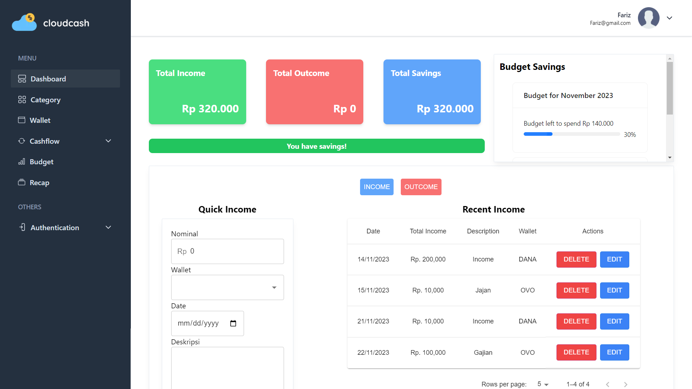
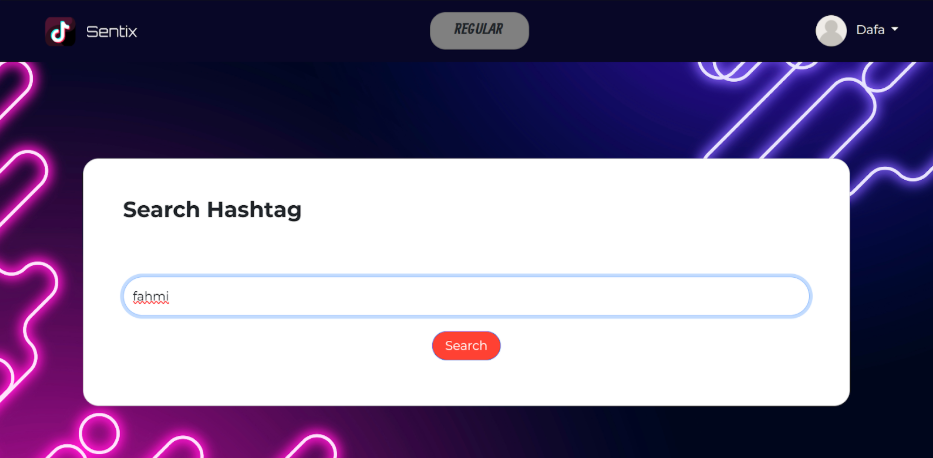

What I Do
I am a passionate designer and developer with a focus on creating impactful web and mobile applications.
Website Development
Mobile App Development
UI/UX Design
Technology
-

Javascript
-

Python
-

Java
-

HTML
-

CSS
-

SQL
-

React
-
NextJS
-

VueJS
-

Flutter
-

NodeJS
-
ExpressJS
-
Flask
-

Spring Boot
-

PostgreSQL
-

MySQL
-

MongoDB
-

Git
-

Docker
-

TailwindCSS
-

Typescript
Experience
Junior Software Developer
PT. Collega Inti Pratama
Internship
- Contributed to the maintenance and enhancement of the Syariah Core Banking System, including bug fixing and feature improvements.
- Designed and developed a mobile monitoring application called Smart Batch Process App to improve real-time operational visibility and efficiency.
Projects
Here are some of my notable projects:
Colle - Collaborative Learning
React
Spring Boot
Tailwind CSS
- Developed interactive dashboard features that present personalized summaries and activity for users based on their roles (student, lecturer, or practitioner).
- Implemented the user profile module, allowing users to view and update personal information and track learning activities.
- Integrated frontend (React) components with backend RESTful APIs (Spring Boot) to ensure smooth data communication and real-time updates.
Cloudcash - Finance Management Web Development
React
NextJS
Typescript
Tailwind CSS
- Designed and developed the frontend interface of a Progressive Web App (PWA) aimed at helping users efficiently manage and monitor their personal finances.
- Built responsive and user-friendly UI components using React and NextJS, enabling seamless navigation across key features such as budget tracking, transaction history, and financial summaries.

Sentix - TikTok Influencer Sentiment Analytics
Python
Flask
Bootstrap
- Developed interactive dashboard features that present personalized summaries and activity for users based on their roles (student, lecturer, or practitioner).
- Implemented the user profile module, allowing users to view and update personal information and track learning activities.
- Integrated frontend (React) components with backend RESTful APIs (Spring Boot) to ensure smooth data communication and real-time updates.
